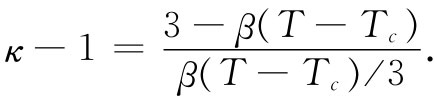

现在要来描述一种特殊晶体，几乎仅仅是偶然它才具有内在的永久电极矩。它的情况很接近临界状态，以致若稍微升高一点温度，该晶体便将完全丧失永久电极矩。另一方面，若它们接近于立方晶体，以致它们的矩可以在不同方向被转动，则可以在改变外电场时探测到电极矩大的变动。所有的极矩都翻转过来了，因而得到了大的效应。凡具有这种永久电极矩的物体都称为铁电体 ，它取名于首先在铁中发现的相应的铁磁效应。
我们愿意通过对铁电材料的一个特殊例子的描述，来解释铁电现象是如何产生的。有几种方法可以产生铁电特性。但我们将仅仅讨论其中一种神秘情况——BaTiO3 。这种材料的单胞具有如草图11-9的那种晶格。事实证明，在某个温度以上，具体地说即在118℃以上，BaTiO3 是一种普通电介质，具有巨大的介电常量。然而，低于这一温度，它会突然具有永久电极矩。
图11-9 BaTiO3 的一个单胞，原子实际上填充了大部分空间，但为了看起来清楚起见，仅表示出它们的中心位置
在计算固态材料的极化时，我们必须先求得每个元胞处的局部电场。同时还必须将自身极化的场也计算在内，如同上面处理液体的情况那样。但晶体并非均匀液体，因而不能采用在一个球形空腔里可能获得的那种局域场。如果你对该晶体进行计算，就会发现在式（11.24）中的那个因子1/3已稍微发生了变化，但与1/3仍相距不远（对于简单立方晶体来说，就恰好是1/3）。因此，在这里的初步讨论中，我们将假定在BaTiO3 中这个因子为1/3。
原来当我们在上面写出式（11.28）时你可能就已怀疑，要是Nα变成大于3那会发生什么情况呢？似乎显出κ会变成负数。但这肯定是不对的。让我们来看看，要是在一特定晶体中α逐渐增大会出现什么情况。当α变大时，极化跟着增加，从而形成了一个较强的局域电场。可是一个较大的局域电场将使每一原子的极化增强，从而又进一步提高了局域电场。假如原子的“适应性”足够大，则这一过程会继续下去；这里有一种反馈作用，引起了极化的无限度增长——假定每一原子的极化始终正比于场而增长。这个“失控”条件发生在Nα=3时。当然，极化不会变成无限大，因为感生极矩与电场之间的正比关系在强场时失灵了，从而使上述的一些公式不再正确。真正发生的情况，是在晶格中已“锁住”了一个自生自长的、高度的内部极化。
在BaTiO3 的例子中，除了电子极化之外，还有相当大的离子极化。这可认为是由于钛离子在立方晶格中会稍微移动一点而引起的。不过晶格会阻碍大的运动，因而当钛离子已移过一小段距离后，它就被堵住而停止不动。但这时晶胞却已把一个永久偶极矩保留下来了。
在大多数晶体中，这就是在能够达到的各种温度时的实际情况。关于BaTiO3 的这个十分有趣事情，是由于存在这么一个灵敏的条件，即如果Nα只减少一点点就不会碰到困难了。既然N是随温度升高而减少的——由于热膨胀的缘故——我们便能够通过改变温度来调整Nα。在那临界温度之下它才恰好被固定下来，因而——通过加上电场——就很容易改变极化并把它锁定在另一个方向上。
让我们来看看能否更详细地对所发生的事态进行分析。就把Nα严格等于3的那个温度叫做临界温度Tc 。当温度升高时，由于晶格膨胀，N就减少一些。由于膨胀很小，所以我们便可以说，在临界温度附近
Nα=3-β（T-Tc ）. （11.30）
式中β是一个小的常数，它与热膨胀系数的数量级相同，或者约等于10-6 —10-5 /℃。现在，若我们将这个关系代入式（11.8）中，便可以得到

由于已假定β（T-Tc ）比1小，因而可以将此式近似地化成
（11.31）
当然，这个关系式仅在T＞Tc 时才是对的。我们看到，恰好在临界温度以上时，κ非常大。由于Nα那么接近3，因此就有一个巨大的放大效应，使介电常量可以轻易地高达50000至100000。它对温度也非常敏感，当温度升高时，介电常量与温度成反比地降低。可是，与偶极性气体的情况不同，那里的κ-1与绝对 温度成反比，而对于铁电体它同绝对温度与临界温度两者之差反比地变化（这一定律称为居里外斯定律）。
当我们把温度降至临界温度时，会发生什么情况呢？如果设想一个像图11-9所示的那种单胞晶格，便会见到有可能选出沿竖直线的离子链。在这些链中，有一种是由彼此相间的氧离子和钛离子组成的。还有其他一些线则分别由钡离子或氧离子构成，但沿这些线上的间隔要大些。通过想象出如图11-10（a）所示的一系列离子链我们便可以作出一个简单模型来模拟这种情况。沿着我们所称的主链，其中离子间隔为a，等于晶格常量的一半 ；在彼此全同的链之间，其横向距离为2a。在这些主链之间还有一些不那么致密的链，我们暂且不予考虑。为使分析稍微简单些，我们也将假定在各条主链上的所有离子完全相同（这不是一种极粗略的简化，因为所有一切重要效应仍会出现。这是理论物理的技巧之一。先做另一个问题，因为它较容易解决——然后，在已经理解了事情怎样进行之后，才及时将一切复杂情况都放进去）。
图11-10 关于铁电体的模型。（a）相当于反铁电体；（b）相当于正常铁电体
现在，让我们试着按照上述模型找出会发生的事情。我们假定每个原子的偶极矩为p，并希望算出链中一个原子处的场，必须求出来自其他各原子之场的总和。我们将首先算出仅来自一条竖直链中各偶极子的场，其他的链我们将在以后再谈。沿偶极子轴向并与其相距为r处的场由下式给出：
（11.32）
作用于任一个特定原子上的、由那上下两个等距偶极子所提供的场，方向总是相同，因而对于整条链来说，我们就得到：
不太难证明：要是我们的模型像一块完整的立方晶体——也就是说，若近邻的全同链只离开a——则数值0.383便应改成1/3。换句话说，要是近邻一些链位于距离a处，这些链对整个和的贡献也不过是-0.050个单位。然而，我们正在考虑的近邻一条主链却在2a距离处，而正如你可回忆第7章那里所讲的，来自一个周期性结构的场乃是随距离作指数函数式衰减的。因此，这些链的贡献将远比-0.050为小，这正好使我们可以略去所有其他链的贡献了。
现在，应当找出要使失控过程能够进行必须有多大的极化率α。假定链中每一原子的感生极矩p正比于作用在它上面的场，如式（11.6）所示。利用式（11.33），就可从E链 获得作用于原子上的、使其极化的场。因而便有下列两式：
p=α∈0 E链
和
上面这一对方程有两个解：E链 和p均为零；或当E链 和p均为有限时
于是，若α与a3 /0.383同样大，则由它本身的场所维持的永久极化便将开始。这一临界等式对于BaTiO3 来说，必须正好在温度Tc 时达到（注意，假如α高于弱场的临界值，则在强场中α应降低，而在平衡态我们已找到的相同等式仍将成立）。
对于BaTiO3 来说，间距a为2×10-8 cm，因而必然预期α=21.8×10-24 cm3 。我们可以把它与单个原子的已知极化率做比较。对于氧，α=30.2×10-24 cm3 ，看来我们是对头的！但对于钛，α=2.4×10-24 cm3 ，那就相当之小。为了运用上述模型，我们大概应当采取它们的平均值（本来也可再度就相间原子的那种链进行计算，但结果却几乎相同）。因此，α（平均）=16.3×10-24 cm3 ，它仍未达到足以提供永久极化的程度。
但请等一等！迄今为止我们仅对电子极化率进行了相加。此外，还有由于钛离子移动而引起的某种离子性极化。我们只需要一个等于9.2×10-24 cm3 的离子极化率 [2] （采用相间原子所进行的更精密的计算表明实际上需要的是11.9×10-24 cm3 ）。要理解BaTiO3 的特性，我们就得假定有这么一种离子极化率存在。
在BaTiO3 中，为什么钛离子会有那么大的离子极化率还不清楚。此外，在较低温度时，它在沿体对角线和在沿面对角线上的极化程度为什么会相同，也不明白。如果把图11-9中各球的实际大小都计算出，并问在由钛的近邻氧离子所构成的箱子中钛离子是否会有点儿松动——那是我们所期望的，以便它较易移动——你却找到完全相反的结果，它被塞得很紧。那些钡 原子就有点儿松，但要是你仅让它们运动，则算不出那种结果。因此，你会看出，这一课题实际上还没有百分之百弄清楚，仍然存在一些我们希望了解的奥秘。
回到图11-10（a）中的简单模型上来，我们看到来自一条链的场往往会使其邻近的链按相反 方向极化，这意味着尽管每一条链会被锁住，但单位体积里却不会有净极矩（这样，虽然不会有外部的电效应，但仍存在某种人们可以观测到的热力学效应）！像这样的系统确实存在，并称为反铁电体。因此，我们刚才所解释的实际上乃是反铁电体。然而，BaTiO3 确实排列得如图11-10（b）那样。所有的氧钛链都在同一个方向上极化，因为它们之间还有一些中间链存在。尽管这些链中的原子并不是非常极化，也并非十分致密，但仍将在与氧钛链相反的方向上有些极化。这极化作用在近邻一条氧钛链上所产生的弱场就会促使它处于与第一条链相平行的方向。因此，BaTiO3 的确是属于铁电性的，这是由于在链与链之间还存在一些原子。你或许会觉得奇怪：“在两条氧钛链之间的直接影响又该会怎么样呢？”然而，应当记住，那直接效应是随距离按指数函数减弱的。强 偶极子的链在2a距离上的效应可能还小于弱偶极子的链在a距离上的效应。
这一个目前我们对于气体、液体和固体的介电常量理解的相当详尽的报告就此结束。
[1] 参考：Sänger，Steiger and Gächter. Helvetica Physica Acta ，1932，5：200.
[2] 按照上述的简单平均法计算，这个数字似乎应是11.0×10-24 cm3 。——译者注